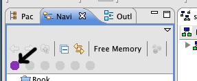

DiVA Requirements Engineering Tools
This manual contains instructions for:
ArborCraftExt
ArborCraft is a tool that will help you create feature models from natural-language requirements documents, using a suite of powerful automatic techniques as well as using your domain knowledge to guide the process.
ArborCraft is applied to a plain text file (.txt). First select your text file and then activate ArborCraftExt via the context menu option or via the view toolbar item (see Figure 1).

Figure 1 ArborCraftExt is activated via the context-menu (left) or the view tool bar item (right).
ArborCraft gives you some options to help tweak the feature model creation process (see Figure 2).
Figure 2 ArborCraftExt options
The options are as follows:
- No. of sentences: tells ArborCraft how to break down the requirements documents into individual requirements. Setting this to 0 will result in breaking the requirements on a blank line; that is, respecting the original structure of the document. Setting it to a number greater than 0 will tell ArborCraft to split requirements on the given number of sentences.
- No. of levels: specifies the maximum number of levels in the resulting feature tree. A small number will give a broad, flat tree; a larger number will give a deeper and more fine-grained hierarchy.
- Similarity threshold: if left at 0.0, ArborCraft will cluster all of the requirements into a single tree, even if they are dissimilar. Setting this value to a higher number (< 1.0) tells ArborCraft to stop clustering once the similarity drops below this number. This will usually result in a "forest" of smaller feature trees.
- Mandatory percentage: given multiple documents, ArborCraft will attempt to disambiguate between mandatory and variant requirements based on their distribution across the document set. A feature is considered mandatory if the requirements that make it up are taken from more than the set percentage of documents, and variant if they are taken from fewer than this percentage.
- Run EA-Miner: This option allows to enable (when checked, as is the default option) and disable (when unchecked) the lexicon-based processing. This includes the lexicon-based variability, soft-goal, adaption point, and context identification. All of these options have been detailed previously in this document.
- Lexicon File: Via this parameter a proprietary lexicon file can be provided. If this option is not used, a default lexicon file is used.
- Composition File: Via this parameter an (optional) composition file can be provided. If this option is not used, the tool will not carry out any composition-related processing.
- Automatic Naming: Provides support for feature naming via suggestions of "clue terms" for each feature name. EA-Miner needs to be enabled for this option.
Output
Once the appropriate options have been set and OK pressed, on completion of the ArborCraft process, a new folder will be present with the same name as the requirements document. This folder should contain the following files (assuming the file doc.txt):
- doc.fmp: the feature model in FMP format; this can then be edited using the FMP plugin;
- doc.rdl: breakdown of the features in FeatureRDL format;
- doc.dot: the feature model in Graphviz format;
- doc.jpg: the Graphviz-generated image of the feature model (requires working installation of Graphviz including dot binary on system path)
Experimental Features
A number of experimental features are also provided in ArborCraftExt that are not core to the DiVA studio, these include:
Generating Trace Links
If the Enable tracing option is selected, ArborCraft will automatically generate trace links in an ATF repository. This repository should exist in the same Eclipse project as the requirements document(s) and the name of the repository can be set using the Repository name option.
Handling Imperfect Information
When the Identify Ambiguities option is checked, ArborCraft will start a three-step procedure for identifying and handling ambiguous requirements during the creation of the feature tree. The first step is the selection of ambiguous requirements. Figure 3 below depicts the window for selecting ambiguous requirements in the requirement specification.
Figure 3 Ambiguous requirements selection.
When the ambiguous requirements have been identified, the next step is to define possible interpretations for these requirements. Figure 4 below depicts the ArborCraft window for this activity.
Figure 4 Alternative interpretation definition.
On the left side of the window, an ambiguous requirement can be selected. The top right side can then be used to define interpretations for this particular requirement. The drop-down box contains all the interpretations that have been defined for the currently selected requirement. Also, stakeholder interest values, such as relevance or scope, can be defined for each interpretation.
The final step of the ambiguity handling capability of ArborCraft is finding the optimal feature tree from the various interpretations. Figure 5 depicts the window for setting the optimisation parameters.
In this window, the stakeholder interest value for which to optimise (maximise or minimise) is selected at the top. A number of restrictions can be created to ensure specific properties of the resulting feature tree, such as in this case that the scope value is large than 0.6. Finally, the optimisation strategy can be selected, which is either exhaustive or heuristic (faster but less accurate). After these steps, ArborCraft proceeds as usual to create the feature trees.
Figure 5 Setting the optimisation parameters.
Attribute Weighting
If the Attribute weighting option is selected, you can guide the ArborCraft operation by providing hints about which requirements are likely to be similar (that is, which should be grouped into the same feature or features). In order to do this, you can add annotations to the requirements document at the beginning of requirements with a line-break at the end of each one, like so:
@bob
The system should be secure and free from attack.
@bob
@110317
Users must log in with a username and password.
ArborCraft will then allow you to define a weighting for each annotation, as shown below. If ArborCraft finds two requirements which have the same annotation, it will weight their similarity based on the weighting set here, such that (given that the weighting is higher than 1.0) those requirements are more likely to be grouped together. Examples of helpful usage scenarios might be:
- Nathan always works on the same stuff; so annotate with authors and weight @nathan highly
- We all worked on the same feature on 17th March; so annotate with date and weight @110317 highly
- All the requirements in subsection 2.1 are closely coupled; so annotate with subsection and weight @2.1 highly
- We know the feature breakdown already - so annotate with feature names!
The annotations are completely custom - how you use them is limited only by your imagination!
Figure 6 Setting the attribute weights.
FMP2DiVA
The FMP2DiVA plugin is a simple tool for converting a FMP feature model, generated manually or via ArborCraftExt to a DiVA model. This conversion populates the DiVA model with candidate dimensions and variants. To active this tool, select the FMP model you wish to convert and and then activate FMP2DiVA via the context menu option or via the view toolbar item (see Figure 7).
Figure 7 FMP2DiVA is activated via the context-menu (left) or the view tool bar item (right).
Once complete, FMP2DiVA will produce a DiVA model alongside the selected FMP model with the same name as that FMP model.
Feature Tree Normaliser
This plugin is helper tool to allow the comparison of feature trees (see Feature Tree Similarity Analysis). The tool ensures that every node in the selected feature tree has text associated with it. This allows the semantic comparison between features to be performed when calculating the feature tree similarity. For the this tool to be successfully run two requirements must be met (ArborCraftExt generated FMP models meet these requirements):
- All leaf nodes in the selected feature tree must have some text associated with them.
- All nodes need to have a String attribute attached (see Figure 8) even if no text is assigned.
Figure 8 The properties view attached to FMP model elements.
Activate the tool via the context menu or the view toolbar item (see Figure 9).
Figure 9 The Feature Tree Normaliser is activated via the context-menu (left) or the view tool bar item (right)
The output from this process is the selected FMP model normalised.
Feature Tree Similarity Analysis
The Feature Tree Similarity Analysis plugin compute the similarity of two selected FMP models. Various attributes are calculated in this similarity analysis including:
- Semantic Similarity
- Structural Similarity
- Logical Similarity
The feature models being compared must be normalised as described by the Feature Tree Normaliser. To calculate the similarity select the two feature models you wish to compare and then activate the plugin via the context menu or view toolbar item (see Figure 10).
Figure 10 The Similarity Analysis is activated via the context-menu (left) or the view tool bar item (right)
Depending on the size of feature models being compared, this similarity by take a while to compute due to the semantic analysis being performed. To estimate how long (in seconds) the similarity will take simply multiply together the number of features in both trees. For example, if you have 10 features in one model and 12 in the other, the similarity will take approximately 120 seconds.
Once complete, a new folder will be created in the root of your Eclipse project. In this new folder, a text file will have been created which contains a detailed breakdown of the similarity calculations for the two trees compared.
DiVA Compare
The purpose of the DiVA compare tool is to allow changes that have been made to be transferred back to the originating feature model. This ensures that the two models remain in-sync and consistent with each other. The changes transferred consist of:
- DiVA Dimensions/Variants renamed.
- DiVA Dimensions/Variants deleted.
- DiVA Dimensions/Variants added.
Where corresponding features can be found in the feature model, the same actions will be applied to them. Ensuring the feature model and DiVA model remain in-sync with each other is important to ensure complete traceability from the DiVA model back to the requirements text.
Another feature of this tool, which eases the navigation between the feature model and DiVA model, allows the corresponding elements in each model to be quickly found.
To activate the DiVA compare tool first, select the two DiVA models that represent the initial version and subsequent version that has undergone change. The tool can then be selected via the context menu or the view toolbar (see Figure 11).
Figure 11 DiVA Compare is activated via the context-menu (left) or the view tool bar item (right).
Once the DiVA models have been compared, the tool requests that the relevant feature model is selected to which the changes should be applied. Simply just enter the partial name of the applicable FMP model for it to be displayed (see Figure 12).
Figure 12 FMP model selection.
Once complete, the output will be an updated feature model.
As mentioned above, this tool also allows the corresponding features model elements and DiVA model elements to be quickly found. To navigate between models, simply select the model element you wish to trace and activate the relevant context menu item (see Figure 13). The success of this relies on a DiVA model and FMP model with equivalent names (e.g. model.fmp and model.diva)
Figure 13 Tracing elements from the FMP model to the DiVA model (left) or from the DiVA model to the FMP model (right).
DiVA Simulation Analysis
This tool takes advantage of the traceability offered by DiVA Compare and allows the text to be extracted from the requirements document that is related to the variants suggested in the DiVA simulation results. This allows further analysis of the simulation results to determine the appropriateness of the suggested configurations.
To extract the requirements simply activate the plugin on the DiVA model that contains the relevant simulation results via the context menu or the view toolbar option (see Figure 14).
Figure 14 DiVA simulations can be applied via the context-menu (left) or the view tool bar item (right).
You will then be asked to select which suggest configuration you wish to analyse further (see Figure 15).
Figure 15 Configuration selection.
The subsequent step involves selecting the relevant FMP model from which the selected DiVA was generated from. The partial name of the FMP model can be entered for it to be displayed (see Figure 16).
Figure 16 FMP model selection.
Finally, a filename must be entered to which the extracted requirements will be saved to (see Figure 17).
Figure 17 Saving the extracted requirements.
The output from this process will be a text document (in the specified location) containing the requirements text that is relevant to the selected configuration.